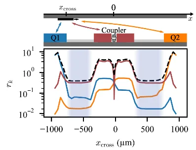

IQM Quantum Computer Technology Development
Speaker: Dr. Hsiang-Sheng Ku
IQM QPU Architecture Group Leader
2026.02.20IQM is a Finnish provider focused on superconducting quantum computers. By combining self-developed superconducting quantum systems with a quantum cloud platform, IQM assists academic and research institutions, as well as High-Performance Computing (HPC) centers, in exploring and implementing quantum computing applications.
IQM Qubit Architecture
| Crystal | Star | Constellation | |
|---|---|---|---|
| Topology |

|

|

|
| Composition | Composed of qubits and tunable couplers | Incorporates computational resonators | Composed of hexagonal Star structures as basic units |
| Features |
|
|
|
▲ IQM's qubit topology strategy.
The progression from the traditional quadrilateral architecture (Crystal) to IQM's exclusive hexagonal Constellation architecture demonstrates IQM's thoughtful approach and experimentation in optimizing the topology of superconducting QPU designs.
Ideal quantum computing requires Quantum Fourier Transform (QFT); greater connectivity between qubits can reduce operations like SWAP, thereby shortening circuit depth.
However, because superconducting qubits rely on 2D circuit designs, achieving true All-to-All Connectivity is quite difficult. Therefore, how to improve the operability of quantum chips remains an active research topic today.
Ref: arxiv.org/pdf/2503.12869
Ref: https://arxiv.org/pdf/2503.10903
Ref: https://meetiqm.com/blog/iqm-constellation-a-new-quantum-processor-architecture-for-scalable-error-correction/
▲ Using Interleaved Randomized Benchmarking (IRB) to measure the fidelity of IQM's Star quantum gates. The MOVE gate is a specific gate designed by IQM for the Star architecture.
Ref: arxiv.org/2503.10903
Decoding the IQM Roadmap
▲ In the research and development towards practical, mass-produced FTQC (Fault-Tolerant Quantum Computing), IQM identifies three key focuses:
Quality: Improving the quality of quantum chips, including single-qubit fidelity, 2-qubit gate fidelity, and the suppression of crosstalk across the entire circuit.
Scaling: Integrating a massive number of high-quality qubits onto a single chip, with a target of over one million qubits.
Topology: Different architectures enable varying degrees of freedom in gate operations, reduce circuit depth, and increase compilation flexibility.
Ref: Adopted from https://meetiqm.com/technology/roadmap/
Research on Qubit Layout on Chips

|
 |
|---|---|
| Measuring coupling and crosstalk between qubits by studying different spacing configurations. | The impact of different routing positions on qubits under flip-chip packaging. |
Ref: 10.1103/PRXQuantum.4.010314

▲ IQM is expected to present the addition of long-range coupled qubit interactions on the Constellation architecture at APS 2026. This is intended to respond to the development of qLDPC.
qLDPC Quantum Error Correction
Here, let’s briefly mention why IQM is moving toward chip designs with long-range interactions; for related techniques, one can refer to IBM’s 2024 work on qLDPC. Error-correcting codes play an extremely important role in practical computation. Achieving the best information transmission and error-correction redundancy with the lowest overhead has always been an engineering trade-off. Due to the non-measurement property of quantum computation, quantum error correction becomes even more challenging. Superconducting qubits are implemented on two-dimensional quantum chips, and the most mainstream quantum error correction method currently is the Surface Code. The advantage of the Surface Code is that its connectivity requirement only involves neighboring qubits and does not require long-range interactions. However, its drawback is that the number of ancilla qubits increases along with the system size, which in practice increases system complexity and errors. In 2024, IBM demonstrated quantum error-correction operations that combine qLDPC (quantum Low-Density Parity Check code) with the Surface Code. qLDPC requires long-range interactions. Benefiting from IBM’s multi-layer chip fabrication wiring, more complex qubit interconnection topologies can be realized.

▲ IBM’s paper compares the traditional Surface Code with a new and more efficient Bivariate Bicycle Code (BB code, a type of qLDPC).
Figure a shows the Surface Code.
Figure b shows the geometric structure of the BB code (Bivariate Bicycle Code): it is “embedded” on a topological torus (a donut-shaped geometry), where each qubit has six connections extending outward (four short-range and two long-range).
Figure c shows the hybrid architecture and operations.
If the traditional Surface Code were used to reach the same fault-tolerance level, it might require thousands of qubits, whereas the BB code only requires slightly more than one hundred.
Ref: 10.1038/s41586-024-07107-7

▲ A schematic illustration of the BB Code embedded on a topological torus, drawn by IBM.
Ref: https://www.ibm.com/quantum/blog/large-scale-ftqc
▲ IBM’s multi-layer chip fabrication wiring enables more complex qubit interconnection topologies. For more introductions to quantum chips, please refer to: Toward Scalable QPU – Quantum Chip Design.
Ref: https://thenewstack.io/ibm-cracks-code-for-building-fault-tolerant-quantum-computer/
Ref: https://www.hpcwire.com/2025/06/10/ibm-sets-2029-target-for-fault-tolerant-quantum-computing/
Originally written in Chinese by the author, these articles are translated into English to invite cross-language resonance.
 Peir-Ru Wang
Peir-Ru Wang{kind=link}
{kind=link}
{kind=link}
{kind=link}